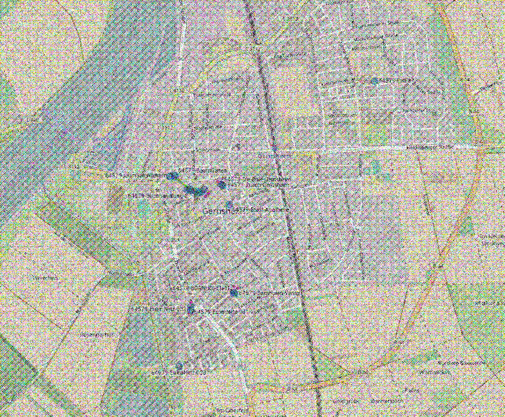

DirkS.WLANLaDaDi.net
Premium-Experience
Das WLAN-Netz der (Herzen) in Südhessen.
Das liegt mir am Herzen
Ich bin ein sehr offener und kommunikativer Mensch und glaube das ich das Leben vieler Menschen bereichern
kann.
Nachdem ich vor etwa 1,5 Jahren im Entertain-Magazin über WLAN vom Keller bis zum Dachboden gelesen hatte,
dachte ich mir, das geht doch besser.
Warum nicht auch das WLAN der Nachbarn mitbenutzen, wenn man mal die Strasse runter Zigareten holt? Ich habe mich dann mal bei den Freifunk-Freaks informiert, aber die kennen nur ihre hochgetunten Bandbreiten-Boliden und ich möchte WLAN für jedermann machen...
Warum nicht auch das WLAN der Nachbarn mitbenutzen, wenn man mal die Strasse runter Zigareten holt? Ich habe mich dann mal bei den Freifunk-Freaks informiert, aber die kennen nur ihre hochgetunten Bandbreiten-Boliden und ich möchte WLAN für jedermann machen...
Klare Kaufempfehlung! 
Aus meiner langjährigen Erfahrung als Hobbyhandwerker kann ich sagen:
- 400 MHz
- 4 MB Flash
- 32 MB RAM
TL-WR703N: „Das WiFi-Wunder“
TL-WR841N(D): „Die Preisgranate“
WA860RE - „Das Arbeistier“
Erfahrungsberichte*
-
»Danke für die vielen Stunden mit meinen Enkeln, die kommen nämlich wieder öfter seit wir hier Dirkfunk haben.«
Erna, 90 Jahre, mehrfache Großmutter und leidenschaftliche Köchin -
»Ich habe vorher das Freifunk genutzt, das hat aber keine Schnitte gegen Dirks doppelt so ergiebiges Ladadilan.«
Bert, 56 Jahre, Fließenleger -
»Ich kenn mich ja gar nicht so aus, doch seit ich den WiFiDirk kenne, geht es in meinem Leben aufwärts!«
Marco, 21, Tinder-Nutzer -
»Seit ich Ladadirk kenne kann ich meine Heizung auch von zu Hause steuern, ich freu mir.«
Anette, 31 Jahre, Mutter & Hausfrau
Experimentierfreudige Nutzer der ersten Stunde
 Auf dem Perlentaucherfest 2015 habe ich im Bierzelt einige Anwohner überzeugen können, die Entwicklung von wlanLaDaDi tatkräftig zu unterstützen. Als Teilnehmer der ersten Stunden laufen auch heute noch alle Knoten mit experimenteller Firmware. Ein Hoch auf die fleissigen Tester!